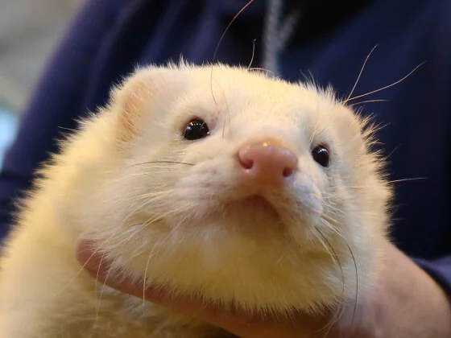
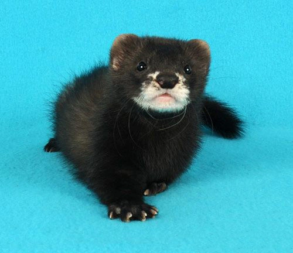
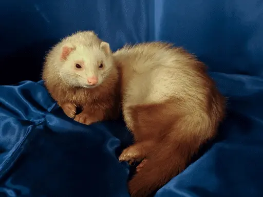
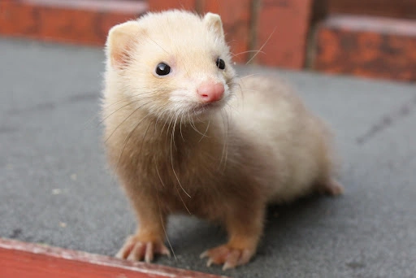

Lost Ferrets
Lost Ferret
Description: "Milo" is a male ferret with a sandy-colored coat and distinctive white markings on his face resembling a mask. He went missing from his home in the suburbs of Perth. Milo is known for his curious nature and may have wandered off to explore nearby gardens or hiding spots. He is dearly missed by his family, who are hoping for his safe return.
Date Lost: April 20, 2024
Lost Ferret
Description: "Luna" is a female ferret with a sleek black coat and bright, curious eyes. She disappeared from her owner's backyard in the outskirts of Perth. Luna is a friendly and sociable ferret who loves interacting with humans. Her family is deeply concerned about her well-being and is actively searching for her in the surrounding neighborhoods.
Date Lost: April 15, 2024
Found Ferrets
Found Ferret
Description: A kind-hearted passerby discovered a lost ferret wandering near the local park in Perth. The ferret, affectionately named "Biscuit" by rescuers, is a young male with a cinnamon-colored coat and a playful demeanor. Biscuit is currently being cared for at the local animal shelter, where staff are working diligently to locate his owners or find him a loving new home.
Date Found: April 18, 2024
Found Ferret
Description: "Sunny" was found hiding under a car in a residential area of Perth by a concerned neighbor. This sweet female ferret has a cream-colored coat with hints of orange and a gentle disposition. Despite her ordeal, Sunny is in good health and is now safe and sound at the local animal shelter, awaiting either reunion with her family or adoption by a loving new owner.
Date Found: April 22, 2024
